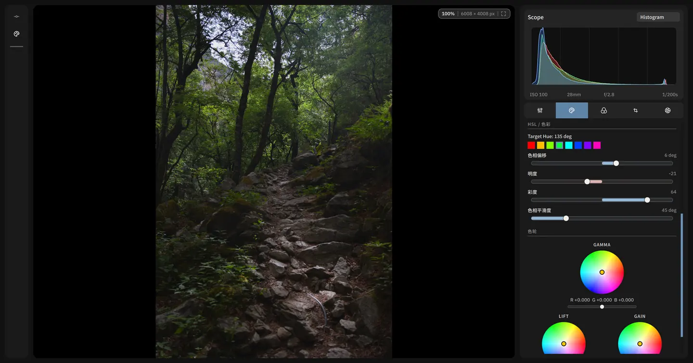
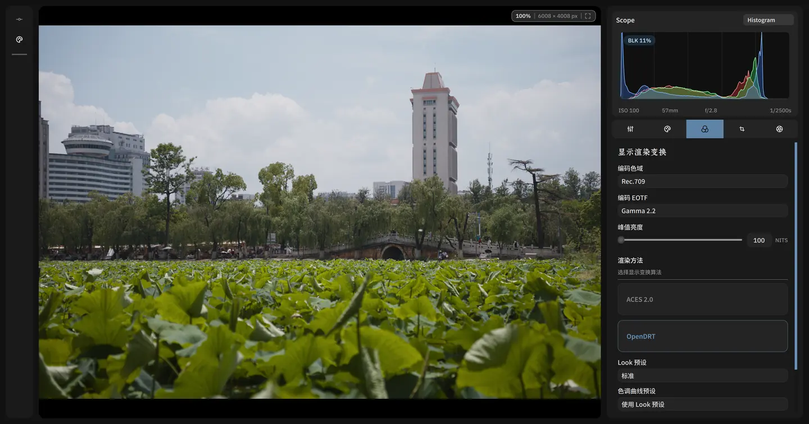
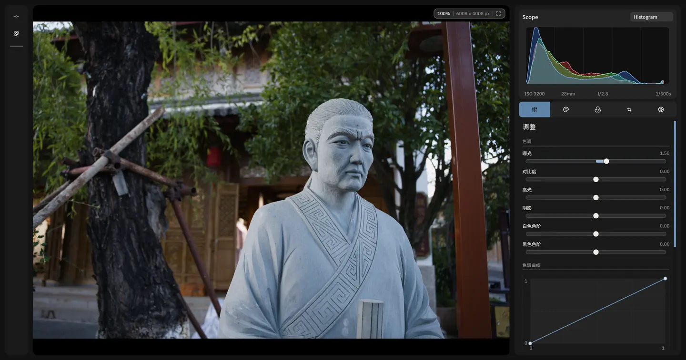
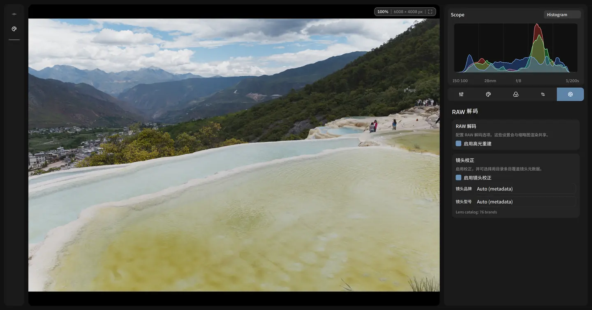
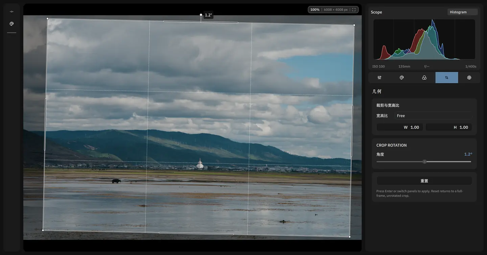
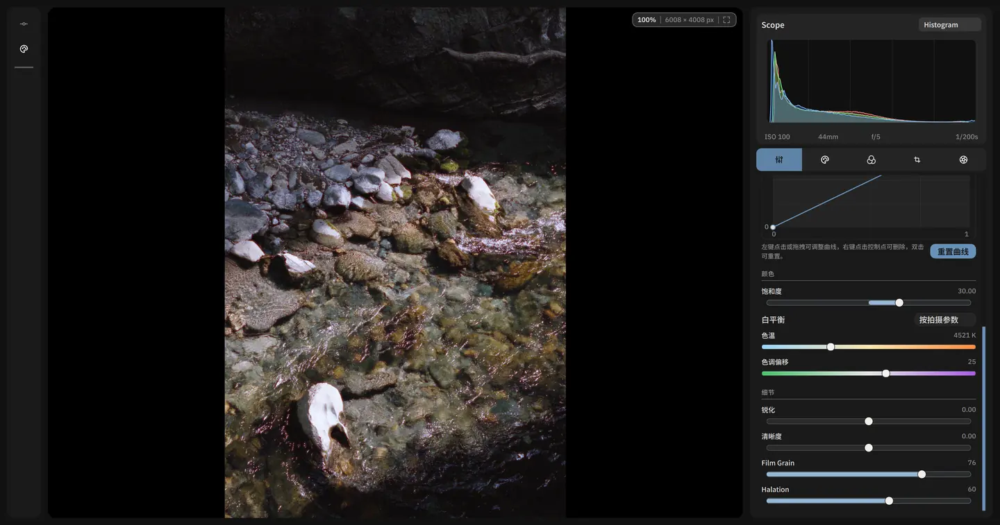
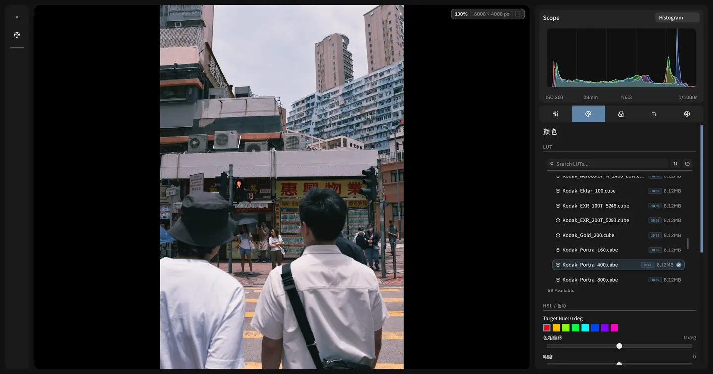

RAW 编辑
在 RAW 照片上调整曝光、白平衡、色彩、影调和构图。编辑器提供基于 ACES 与 OpenDRT 的色彩科学管线，并支持使用 LUT 应用自定义色彩效果。
可使用色调曲线、HSL、通道混合、几何与镜头校正、裁剪与旋转，以及胶片颗粒和 Halation 控制。预览会随调整更新，便于在导出前确认效果。
修改保存在项目中，不会覆盖原始文件。完成后可导出为常用格式，用于分享或后续使用。

更多 RAW 编辑工具





